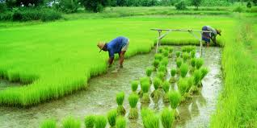
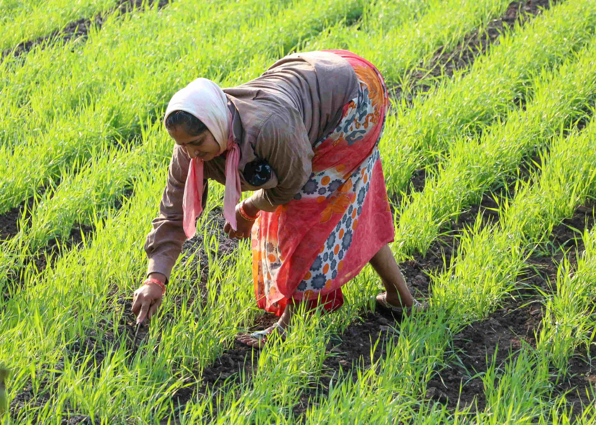
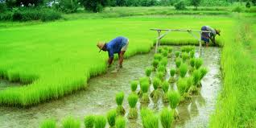
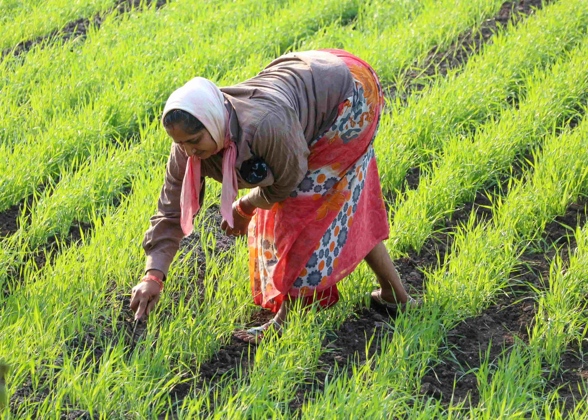

At Kansara Farm, we believe in giving our customers a hands-on experience. With our self-harvesting option, you can come to our farm and pick your own fruits and vegetables straight from the field. It's a great way to connect with nature and enjoy the freshest produce possible.
Bring your family and friends for a fun day of harvesting. We provide all the tools you need, and our staff is always available to guide you through the process.
 


